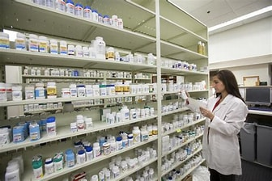

{% extends 'profile.html' %}
{% block dashboard %}
Careers and Jobs After B Pharm

Bachelor of Pharmacy of b.pharm is a 4-year undergraduate course designed to provide students with a deeper understanding of the pharmacy sector. The pharmacy industry is a major contributing factor in the supply and development of newly approved drugs, medicines, and experimental counterparts. In addition, Pharmacy practitioners are involved in the production, development of drugs as well as their quality control and alterations. The pharmacy sector’s integral part in health care makes the pharmacy career options highly sought after and lucrative. This degree will also ensure that you can get into the highest paying pharmacy jobs.
The pharmacy industry is divided into different segments, as given below
Clinical/hospital pharmacy
Industrial
Pharmacy regulators
So, after you graduate from b.pharm, what are the career options after B.pharm and are there any higher studies options the graduates can opt for? If so, what are the best courses after b.pharm? This excerpt explains all about b.pharm and the opportunities it holds.
Eligibility Criteria
It is no secret that education from top-level pharma institutes can be one’s gateway to the highest-paying pharmacy jobs. Therefore, applicants must satisfy the below-mentioned conditions to be eligible for b.pharm.
The B.Pharm is designed for students who have completed their 10+2 graduation with a combination of maths+chemistry+physics or Chemistry+physics+biology. Various institutes will also demand the students to have a minimum score for each of the three required subjects. The highest paying pharmacy jobs will only be for those who have excelled in the above-mentioned subjects.
B.Pharm Top Colleges
All India Council for technical education (AICTE) and the Pharmacy council of India are the authorizing bodies for B.pharm institutes and use the below-given parameters to evaluate them.
Faculty
Lodging and accommodation
Labs and equipment
Non-teaching staff
Teaching arrangements
Best career options after B.pharm
B.pharm is a job-oriented course, and the students are trained in diverse aspects of the pharmaceutical industry, to ensure the best pharmacy career options are available for the B.pharm graduates. Since this course is allied to the medical and pharmaceutical industry the employability options for these graduates are vast and diverse.
B.pharm graduates can find employment in both government and private sectors in India and abroad. Let’s take a look at some of the lucrative opportunities B.pharm graduates can build their careers on.
Drug inspector
Pharmacist
Pharmaceutical marketing
Pathological lab scientist
Health inspector
Chemical/drug technician
Medical devices and quality control manufacturing
Medical Underwriter
Pharmaceutical company
Wholesaler
R&D executive
{% endblock %}